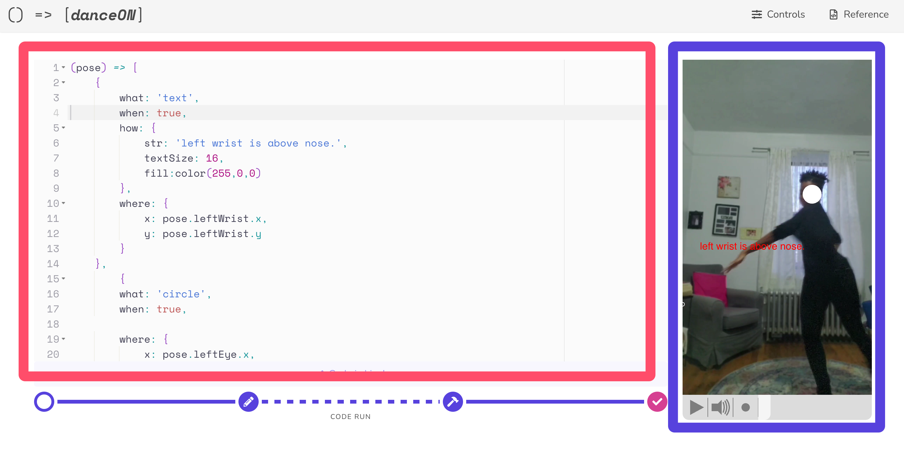
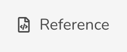
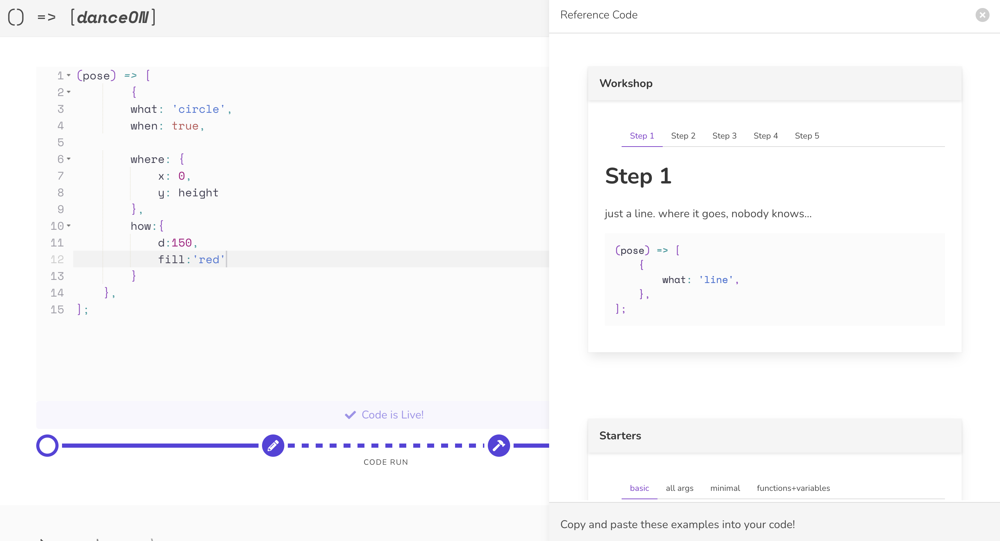
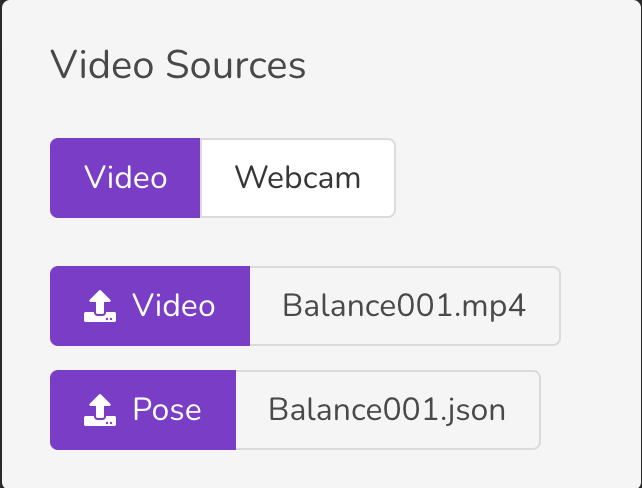
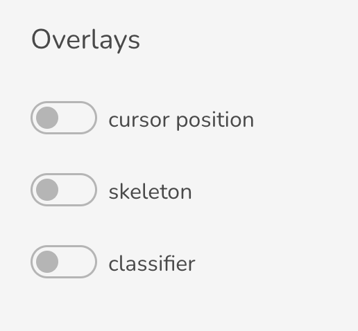
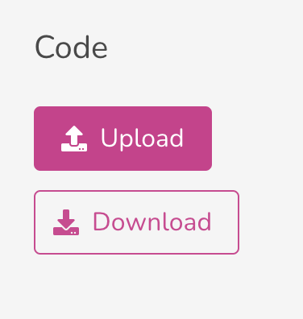
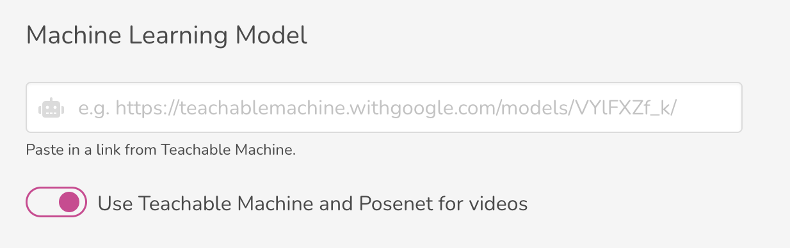

Interfaces
Code Editor and Canvas
The danceON interfaces are divided into two general parts – the code editor (on the left) and the canvas (on the right). All the manipulation of the code in the code editor will be simultaneously reflected on the canvas on the right. See Figure 1, the pink-red square circled out the code editor on the left, and the purple square circled out the canvas on the right. Scroll to the bottom to Section 6 to try the interface in this textbook.

Canvas Tools
If you look into the canvas, you will find a few grey icons at the bottom of the canvas box. They are tools that help you create and choreograph your piece faster. See the list below to see their function. The icons in the margin show the icon before it was clicked on the top and after on the bottom. Scroll to the bottom to Section 6 to try the interface in this textbook.
- The right-facing triangle is a play button for the video displayed on canvas.
- The speaker icon is button to turn on or off the audio in your video.
- The small circle is a shutter for recording your canvas for your choreography.
The slider to the most right on the bottom of the canvas is a tool that shows you and let you adjust where you are at in the video. See Figure 2 You may hover or click on the slider to see or go to the exact frame you are at in a video.
Reference List
There is a reference button on the top right corner which will click-open the reference list on the right of your screen. The reference list contains most of the basic things you need to create a piece in danceON. You will be able to copy the code in reference directly and paste it into your editor to see their effect. See Figure 3.


When you hover over the reference code you wish to cover, you will be able to click the copy button on the top right corner to copy the code.
The punctuations in the code and the sequencing of the code are important. When copying from references, you need to pay attention to what to replace in your code. To learn more about code structure or sequencing of the code, read more about this in chapter 2.
Webcam Tools and Video Upload
When you click the control menu on the top right corner, there is a Video Source option menu where you can upload your own choreography footage or use the webcam for live interaction. See image to the right for reference.
These allow you to work with more controlled footage or live performance settings.

You might need to give webcam premission to the browser you are using in order for danceON to access your webcam. If when you turn the webcam option on, and you didn’t see any pop-up menu to instruct you allowing browser accessing your webcam and your canvas. But your canvas simply doesn’t show your webcam footage. You might need to go the computer’s system setting to enable camera access for your browser.
Overlay
There are many helper functions to help you code in danceON better. When you open the control menu on the top right corner, you can see there is a tab called Overlay. See Figure 4. All of these options are visual tools that gives you some references about the content in the canvas.

- The cursor position gives you the numerical value of your mouse position on the canvas. We will go over this more in the coordinate system chapter.
- The skeleton draws a small circle on all the anchor point on the skeleton of how the computer model determines the human skeleton. Hover over the specific circle with your mouse, and you will see the name of which anchor point you are referring to. You will use that as the variable name for coding the location bounded to the skeleton for your sketch.
- The classifier put some numbers on the top right corner that shows if how well a machine learning model determine certain poses on the frame. We will go over this more in the machine learning chapter.
These are important helper function to give you references on the canvas and skeleton when creating your sketch. Use them when you are coding will help you familiarize the coordinate system and skeleton faster.
Try it here!
Code Management
You may realize if you close your danceON tab and re-opens the tab, you will most likely to see the code you were last working on without needing to save it somewhere. It may seems like a convenience at first to have all the code cached in the browser. However, it is not the safest way to manage your code. And as many other software, it is crucial that you save your work and manage the version of your code.

In the control menu, you will also find the Code menu that allows you to manage your code. To save your work, simply use the download button which will save your work in a JavaScript file on your local device. Put it somewhere you remembers and recognize. When you want to work on this file, use the upload button and locate it on your computer to resume working.
Machine Learning Model Upload
The Machine Learning Model menu allows you to upload a teachable machine model that you can train yourself.
